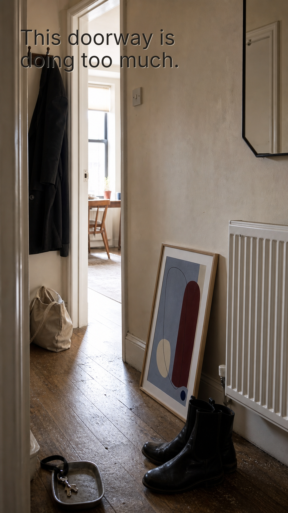
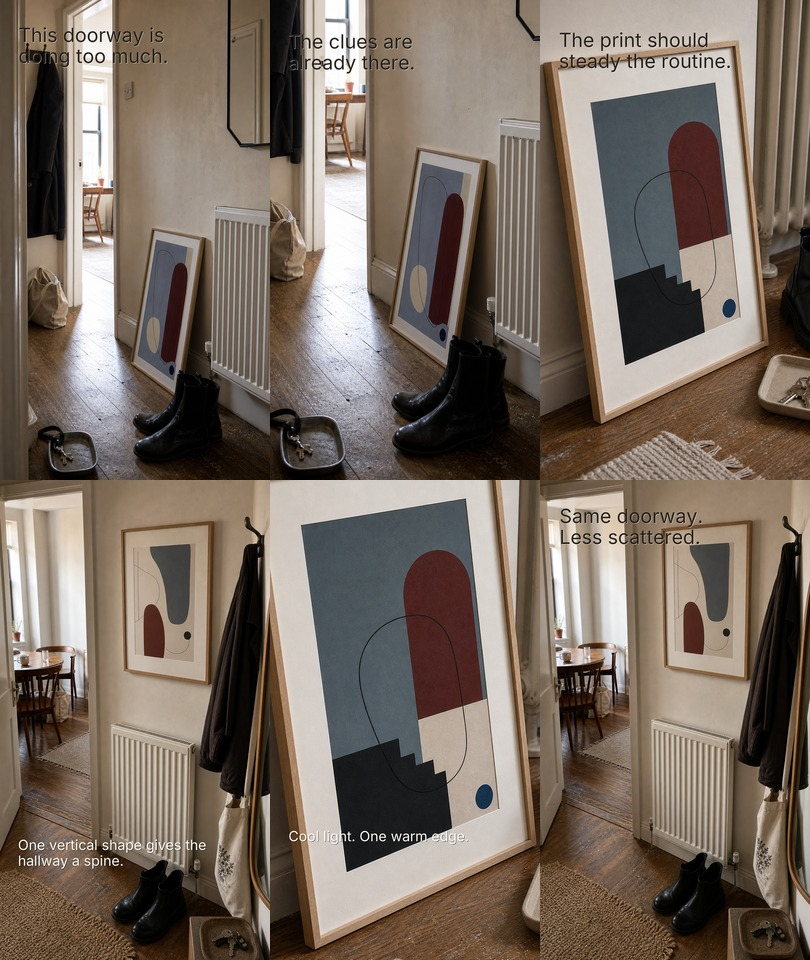
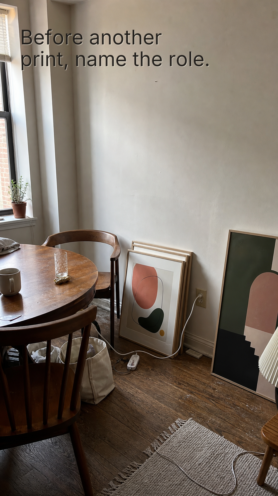
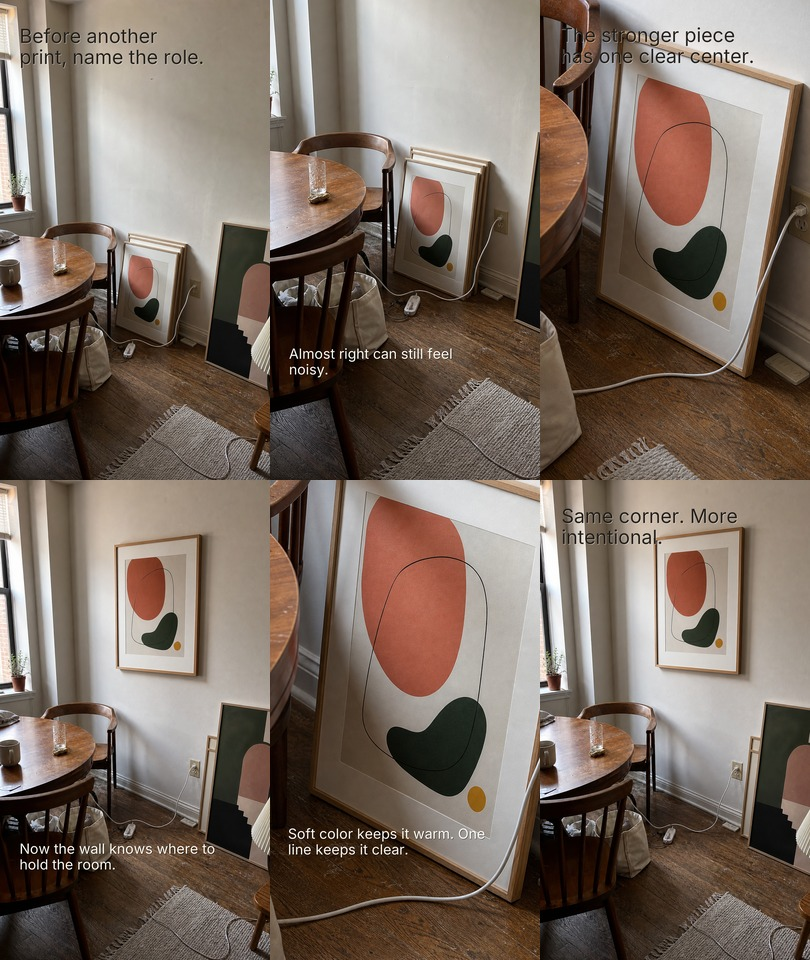
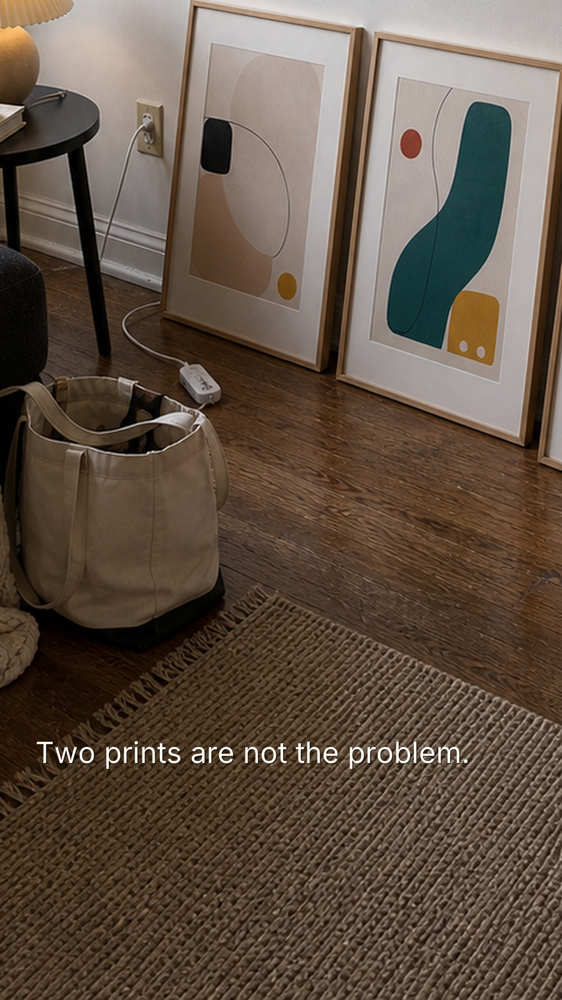
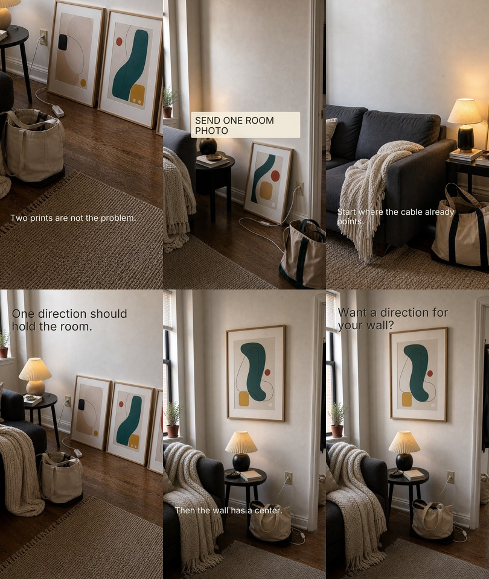
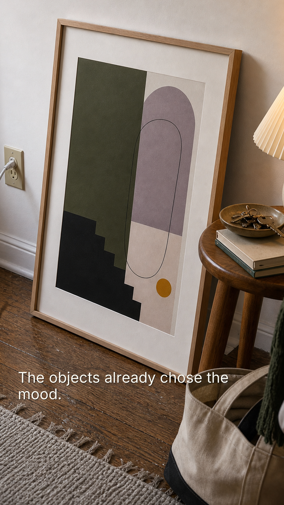
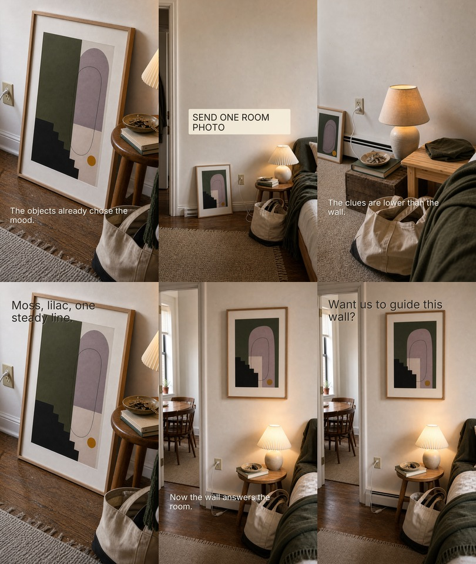

북미/유럽 우선 국가 비율
2.5% → 9.5% +7.0p
미국·캐나다·영국·아일랜드·프랑스·독일·네덜란드·북유럽 등에서 본 사람
생성 시각: 6/14 01:04 KST. 최근 3일 성과, 이번 업로드의 유지·확장·신규 적용, 계정 전체 시청자 방향만 빠르게 확인하는 리포트.
국가 한국 · 6 캐나다 · 1
유입 경로 direct/domain · 6 google.com · 1
기기 모바일 · 5 데스크톱 · 2
제외 사유 datacenter/proxy IP · 13 bot/crawler UA · 8
| 지역 | 유입 | 시각(UTC) |
|---|---|---|
| 한국 / Yongsan-gu | direct/domain | 2026-06-08 13:18 |
전환 계산은 봇·크롤러·헤드리스·CLI(UA), 데이터센터/호스팅 IP, 알려진 스캐너 IP, AI 인덱서, 낡은 데스크톱 스캐너 패턴을 제외한 실제 후보 방문만 사용합니다. 사람들이 주소를 직접 입력할 수 있으므로 direct/elura.art 계열은 TikTok 확정 유입이 아니라 직접/타이핑 후보로만 봅니다. 이메일·IP 원본과 타깃/전체 토글은 실시간 대시보드(/activity/)·관리 엔드포인트(/api/admin/activity?key=…)에서만 확인하세요.
미국·캐나다·영국·아일랜드·프랑스·독일·네덜란드·북유럽 등에서 본 사람
싱가포르·한국·말레이시아 등 아시아권 유입 합산
현재 구매 가능성이 가장 높다고 보는 연령대
홈데코·개인 아트 구매 가능성이 높은 쪽으로 보는 기준
6/13 업로드 4개는 아래처럼 유지·확장·신규로 나눠 적용했다. 오늘 숫자로 성급히 판정하지 않고, 다음 리포트에서 실제 시청자 분포와 함께 평가한다.








최근 시청자 중 우리가 우선 보고 있는 북미/유럽 국가 비율입니다. 현재 기준은 미국, 캐나다, 영국, 아일랜드, 프랑스, 독일, 네덜란드, 북유럽 등입니다.
최근 시청자 중 싱가포르, 한국, 말레이시아, 일본 등 아시아권에서 본 사람의 합산 비율입니다. 현재는 타겟 적합이 아니라 분배 누수/진단 신호입니다.
25-44세 시청자 비율입니다. 현재 우리가 가장 중요하게 보는 구매 가능 연령대입니다.
여성 시청자 비율입니다. 현재 홈데코/개인 아트 구매 가능성이 높은 쪽으로 보고 있는 기준입니다.